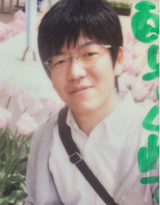
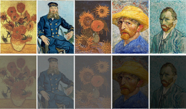
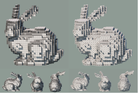
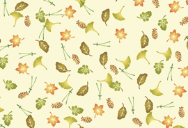
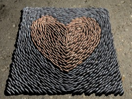

Venice, Aug 2017
Naoki KITA
- Ph.D. Student
- Miyata Laboratory, Japan Advanced Institute of Science and Technology (JAIST)
- Resume
- Email: naoki-ktjaist.ac.jp
- I am a Ph.D. candidate at Japan Advanced Institute of Science and Technology (JAIST). I received my B.S. degree in science from Kanazawa University in 2009, and my M.S. in knowledge science from JAIST in 2011. My current research interests include computational design and human visual perception, especially in layout/arrangement for discrete elements.
News
- [2018.02] I participate in JWC 2018 poster session.
- [2018.01] Our paper "Magic Sheet" was accepted to CVM 2018, Shanghai and Computational Visual Media (SpringerOpen Journal).
- [2017.09] We will demonstrate our project IDEA (Immersive Data Exploration and Analysis) at Nantes Digital Week 2017.
- [2017.03] I will attend Laval Virtual 2017.
- [2017.02] I join READi Design Lab at L'École de design Nantes Atlantique (Feb 2017 - Nov 2017).
- [2016.11] I will present our poster at SIGGRAPH Asia 2016, Macao.
- [2016.08] Our paper was accepted to PG 2016, Okinawa.
- [2016.07] I present our Element Pattern paper at CGI'16, Greece.
Projects

Magic Sheet: Visual Cryptography with Common Shares
Naoki Kita, Kazunori MiyataComputational Visual Media (CVM 2018) to appear

Cube Art
Naoki Kita, Kazunori MiyataSIGGRAPH Asia 2016 Posters

Aesthetic Rating and Color Suggestion for Color Palettes
Naoki Kita, Kazunori MiyataComputer Graphics Forum (Pacific Graphics 2016)

Multi-class anisotropic blue noise sampling for discrete element pattern generation
Naoki Kita, Kazunori MiyataThe Visual Computer (CGI'16)

Interactive procedural modeling of pebble mosaics
Naoki Kita, Kazunori MiyataSIGGRAPH Asia 2011 Sketches
[DOI]
A rule-based method for generating bookshelf models
Naoki Kita, Kazunori MiyataSIGGRAPH Asia 2010 Posters
[DOI]
Spider Hero: A VR application using pulling force feedback system
Ken Ishibashi, Toni Da Luz, Remmy Eynard, Naoki Kita, Nan Jian, Hiroshi Segi, Keisuke Terada, Kyohei Fujita, Kazunori MiyataVRCAI 2009
Publications
International Journal
- N. Kita, K. Miyata, "Aesthetic Rating and Color Suggestion for Color Palettes", Computer Graphics Forum, Vol.35, No.7, pp.127--136 (2016)
- N. Kita and K. Miyata, "Multi-class anisotropic blue noise sampling for discrete element pattern generation", The Visual Computer, Springer, Vol.32, No.6, pp.1035--1044 (2016)
International Conference
- N. Kita, "Perceptually-based Discrete Element Arrangements", JAIST World Conference (JWC 2018), Poster Session, Ishikawa, Japan (February 2018)
- N. Kita, K. Miyata, "Cube Art", ACM SIGGRAPH ASIA 2016 Posters, ACM SA '16, Article 30, pp.30:1--30:1, Macau (December 2016)
- N. Kita, K. Miyata, "Aesthetic Rating and Color Suggestion for Color Palettes", Pacifig Graphics (PG 2016), Okinawa, Japan (October 2016)
- N. Kita, K. Miyata, "Multi-class anisotropic blue noise sampling for discrete element pattern generation", Computer Graphics International (CGI 2016), Heraklion, Crete, Greece (June 2016)
- N. Kita, "Vector Pattern Synthesis from Spatial Elements Distribution", HLD International Symposium, Poster Session, Ishikawa, Japan (March 2016)
- N. Kita, K. Miyata, "Interactive Procedural Modeling of Pebble Mosaics", ACM SIGGRAPH Asia 2011 Sketches, ACM SA ’11, Article 35, pp.35:1-35:2, Hong Kong, China (December 2011)
- N. Kita, K. Miyata, "A rule-based method for generating bookshelf models", ACM SIGGRAPH Asia 2010 Posters, ACM SA ’10, Article 36, pp.36:1-36:2, Seoul, Republic of Korea (December 2010)
- K. Ishibashi, T. Da Luz, R. Eynard, N. Kita, N, Jiang, H. Segi, K. Terada, K. Fujita, K. Miyata, "Spider Hero", Laval Virtual Revolution 2010, An.3, Laval, France (April 2010)
- K. Ishibashi, T. Da Luz, R. Eynard, N. Kita, N, Jiang, H. Segi, K. Terada, K. Fujita, K. Miyata, "Spider Hero: A VR application using pulling force feedback system", VRCAI2010, Session 7, Tokyo, Japan (December 2009)
国内会議（口頭発表・査読有）
- 北直樹, 宮田一乘, "任意の色数のカラーパレット評価および追加色提案手法", Visual Computing/グラフィックスとCAD合同シンポジウム 2016, 東京, 2016年6月
- 北直樹, 宮田一乘, "3D小石モザイクの生成手法", 第10回NICOGRAPH春季大会予稿集, II-6, 2011年3月
- 北直樹, 宮田一乘, "本棚シーンのルールベール生成", Visual Computing/グラフィックスとCAD合同シンポジウム 2010, #17, 神奈川, 2010年6月
- 北直樹, 宮田一乘, "ルールベースの図書館シーンの自動生成", 第9回NICOGRAPH春季大会 論文&アート部門コンテスト予稿集 SII-2, 東京, 2010年3月
- 石橋賢, Toni Da Luz, Remy Eynard, 北直樹, 姜南, 瀬木宏, 寺田圭祐, 宮田一乘, "スパイダーヒーロー：張力提示システムを導入したVRアプリケーション", INTERACTION 2010, PB21, 東京, 2010年3月
国内会議（ポスター発表・査読有）
- 北直樹, 宮田一乘, "Cube Art", Visual Computing/グラフィックスとCAD合同シンポジウム 2013, #40, 青森, 2013年6月
- 北直樹, 宮田一乘, "Poisson-Disk Samplingを用いた離散エレメントテクスチャ生成", Visual Computing/グラフィックスとCAD合同シンポジウム 2012, #27, 東京, 2012年6月
国内会議（口頭発表・査読無）
- 北直樹, 宮田一乘, "Perceptually-based Reduction of Colors", Visual Computingワークショップ in 湯涌温泉, 2015, 石川, 2015年11月
解説など
- 北直樹, 宮田一乘, "カラーパレットの美的評価モデルの構築と追加色の提案手法", 画像ラボ, Vol.28, No.12, pp.14--21, 日本工業出版, (2017)
- 石橋賢, 宮田一乘, Toni Da Luz, Remy Eynard, 北直樹, 姜南, 瀬木宏, 寺田圭祐, 藤田恭平, "スパイダーヒーロー", 画像ラボ, Vol.23, No.7, pp.22--28, 日本工業出版, (2012)
Awards
- Excellent Poster Award, JAIST World Conference 2018
- Outstanding Poster Award, JAIST HLD International Symposium 2016
- Outstanding Performance Students Award, JAIST, 2011
- Best Paper Award, 10th NICOGRAPH Spring, 2011
- Campus Genius Award SILVER (Interactive), 15th Campus Genius Award, 2010
Funding Sources
- JSPS Fellowship for Young Scientists (DC2), Apr 2017 - Mar 2019
- JAIST Grant for Off-Campus Research, Feb 2017 - Nov 2017
- JAIST Doctoral Research Fellowship (DRF), Apr 2016 - Mar 2017
- The Exploratory IT Human Resources Project (THE MITOH Program), Information Technology Promotion Agency Japan (IPA), Feb 2012 - Aug 2012